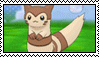
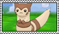

It's been very rainy lately, really feeling like spring. The mayapples are finally coming in, mushrooms are commonly used as "faerie umbrellas" in media but I've always thought mayapples are more apt.
The lettuce along with the genovese and thai basil are starting to sprout indoors. Think this'll be the last of the indoor sprouted seeds for the season.

Outside the baby bok choy has sprouted. I've got high hopes for all these greens this year.
Everything is loving all the rain and looking very lush otherwise.
← Back to the blog